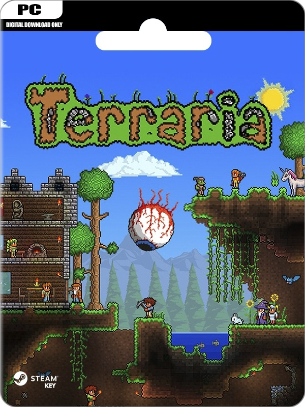

JUEGOS PARA PC DE BAJOS RECURSOS ( SIN VIRUS )
JUEGO #1
geometry dash
Geometry Dash es un videojuego de plataformas creado en 2013 por el sueco, Robert Topala y posteriormente desarrollado por su empresa independiente RobTop Games. Su lanzamiento se produjo el 13 de agosto de 2013 para dispositivos móviles y el 22 de diciembre de 2014, para la plataforma de distribución digital Steam.
REQUISITOS:
.SO: Windows XP.
.Procesador: 2.0+ GHz.
.Memoria: 512 MB de RAM.
.Gráficos: OpenGL 2.0 support.
.Almacenamiento: 100 MB de espacio disponible.
LINK DE DESCARGA ↓
https://www.mediafire.com/file/wqe6w9t673a6fs5/Geometry_Dash_v2.11.rar/file
CONTRA: ARONCHELO

JUEGO #2
minecraft
Minecraft es un videojuego de construcción de tipo «mundo abierto» o sandbox creado originalmente por el sueco Markus Persson, y posteriormente.
REQUISITOS:
Sistema operativo: Windows 7 o superior.
Procesador: Intel Core i3-3210 3.2 GHz / AMD A8-7600 APU 3.1 GHz o equivalente.
Memoria: 4 GB de RAM.
Tarjeta gráfica: Nvidia GeForce 400 Series o AMD Radeon HD 7000.
Almacenamiento: al menos 1 GB de espacio disponible.
LINK DE DESCARGA ↓
https://tlauncher.org/en/
CONTRA: ESTE ARCHIVO NO TIENE CONTRASEÑA

JUEGO #3
terraria
Terraria es un videojuego de acción, aventura y de sandbox producido de forma independiente por el estudio Re-Logic. Tiene características tales como la exploración, la artesanía, la construcción de estructuras y el combate.Se lanzó el 16 de mayo de 2011.
REQUISITOS:
SO: Windows XP / Vista / 7.
Procesador: 1.6 GHz.
Memoria: 512 MB de RAM.
Disco Duro: 200 MB de espacio libre.
Gráficos: Shader Model 1.1 con 128 MB de VRAM.
DirectX®: 9.0c o posterior.
LINK DE DESCARGA ↓
https://www.mediafire.com/file/kwxdod0gc5iitbo/Terraria_1.4.3.6_GD.rar/file
CONTRA: ESTE ARCHIVO NO TIENE CONTRASEÑA

JUEGO #4
GTA 3
Grand Theft Auto III es un videojuego de acción, de mundo abierto en tercera persona desarrollado por DMA Design y publicado por la compañía Rockstar Games en el año 2001. Es el tercer título de la serie Grand Theft Auto, el tercero en presentar un ambiente de año actual, y el primero completamente hecho en 3-D.
REQUISITOS:
SO: Microsoft Windows 2000 / XP
Procesador: Pentium III a 450 MHz
Memoria: 96 MB de RAM
Gráficos: Tarjeta gráfica con 16 MB y compatible con Direct3D
Versión de DirectX: Microsoft DirectX 8.1
Disco Duro: 500 MB de espacio libre sin comprimir
Sonido: Dispositivo de sonido totalmente compatible con DirectX
LINK DE DESCARGA ↓
https://www.mediafire.com/file/ayv86ao6ac03g4c/Gta_3-_ReyR.rar/file
CONTRA: ESTE ARCHIVO NO TIENE CONTRASEÑA

JUEGO #5
GTA SAN ANDREAS
Grand Theft Auto: San Andreas es un videojuego de acción-aventura de mundo abierto desarrollado por Rockstar North y publicado por Rockstar Games.
REQUISITOS:
Sistema Operativo: Microsoft Windows 2000/XP.
Procesador: 1Ghz Pentium III ó AMD Athlon Procesador.
Memoria: 256MB de RAM.
Tarjeta gráfica: 64MB Video Card (Geforce 3 ó superior)
Disco duro: 3.6GB de free hard disk space (minimal install)
LINK DE DESCARGA ↓
http://www.mediafire.com/file/raix2hgvamm47rk/GTA_S.A_Instalador_by_aaronsh312.rar/file
CONTRA: ESTE ARCHIVO NO TIENE CONTRASEÑA